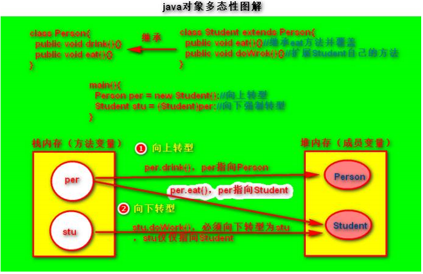

1. 面向对象是相对于面向过程而言的。
2. 软件产品的开发经历了“面向问题”和“面向过程”两个阶段后，迎来了“面向对象”的概念。
3. 面向过程是根据软件需求从头到尾一步到位，在设计过程之中进行结构化处理。
4. 面向对象着重体现在对需求进行大量的分析，相当于先进行好概要设计，再与客户确认需求，之后将确认的需求拆分成“小的功能单元”，根据每个小单元分别实现。
面向对象比面向过程更容易适应多变的需求。
2、面向对象思想（OO）的三大特征
具有两层含义：
1. 一层含义是指将对象的属性（静态成员、成员变量）和行为（动态成员、成员方法）看做一个密不可分的整体，将两者封装在一个不可分割的单位中，这个单位就是类，类是java实现面向对象的单元；
2. 另一层含义是指“信息隐藏”，主要是依靠成员变量和成员方法的四种访问权限对成员变量和成员方法进行一定程度的“可见性”封装，四种访问权限即public、protected、default、private。
2.2、 继承
口诀：私有默认分情况、静态构造不继承。（只能子类能继承的，子类就能覆盖；不能继承的，一定不能覆盖）
任何子类都会继承父类的部分成员变量和成员方法，并且在继承时可以覆盖父类的成员变量和成员方法。
具体分情况：
1. 任何一个类中的静态成员和构造方法都不会被继承下去。
方法的覆盖是多态性的一种体现；而静态成员是编译时静态绑定的，是属于类的，是存放在JVM方法区内存的静态区的，是被当前类的所有对象共享的，并不需要实例化对象，所以静态成员不存在多态的概念。因此静态成员都不会被子类继承下去。
父类的构造方法也不能被子类继承，构造方法是特殊的成员方法，其名称必须和所在类的类名相同，所以导致子类无法继承父类中的构造方法。
2. 对于私有成员和default权限的成员，要分情况。
private成员只能在当前类中被访问，因此子类无法访问父类的private成员，所以，子类是无法继承父类private成员的。
default成员只能在同包中被访问（当然包括了同包中的子类），所以对于外包中的子类是不能访问父类中的default成员，因此，当子类和父类不在同一个包时，子类是无法继承父类的default成员的。
2.3、 多态
对于方法而言，同一个类中，具有相同方法名称的方法因为参数的不同而实现不同的功能（即呈现不同的形态）；
对于类与类的继承、或者类与接口的实现而言，同一个父类的对象既能调用父类中的方法，又能调用子类中的方法（前提是该子类中的方法是子类扩展的或者是覆盖父类中的，即向上转型和向下转型）。
多态的实现方式：
1. 同一个类中方法的重载和父子类之间的方法的覆盖（方法的多态）；
2. 子类与父类、子类与接口之间进行向上转型和向下转型（对象的多态）。
Java中的多态包括两层含义：
一是指方法重载，即方法名称相同，但是对应参数顺序、数据类型、个数不相同；或者父子类之间子类覆盖父类的相同方法。
二是指对象的多态，即对象的向上转型和向下转型。向上转型即将子类对象转换成父类对象，具体含义是父类的引用地址既指向父类的堆内存空间，也指向子类的堆内存空间，当子类覆盖了父类中的成员变量和成员方法时，父类的对象永远指向子类的堆内存空间；向下转型即父类对象转换成子类对象，当子类扩展了新的方法时，必须进行向下转型才能指向子类的堆内存空间而调用。向下转型前必须进行向上转型，如果不，也可直接向下转型，编译不报错，但运行报类转换异常。

3、面向对象的设计原则
内聚：每个模块尽可能独立完成自己的功能，不依赖于模块外部的代码。
耦合：模块与模块之间接口的复杂程度，模块之间联系越复杂耦合度越高，牵一发而动全身。
目的：使得模块的“可重用性”、“移植性”大大增强。
通常程序结构中各模块的内聚程度越高，模块间的耦合程度就越低。
3.2、 模块粒度
1. 『函数』
高内聚：尽可能类的每个成员方法只完成一件事（最大限度的聚合）
低耦合：减少类内部，一个成员方法调用另一个成员方法
2. 『类』
高内聚低耦合：减少类内部，对其他类的调用
3. 『功能块』
高内聚低耦合：减少模块之间的交互复杂度（接口数量，参数数据）
横向：类与类之间、模块与模块之间
纵向：层次之间
尽可能，内容内聚，数据耦合
3.3、 多聚合、少继承
聚合：事物A由若干个事物B组成，体现在类与类之间的关系就是：“类B的实例”作为“类A”的“成员对象”出现
继承：顾名思义，体现在类与类之间的关系就是：“类B”被类A所继承
显然，当观察类B所具有的行为能力时，“聚合”方式更加清晰。
典型应用：java适配器模式中，优选“对象适配器”，而不是“类适配器”。
3.4、 深入分析
1. 高内聚低耦合
内聚是从功能角度来度量模块内的联系，一个好的内聚模块应当恰好做一件事。它描述的是模块内的功能联系；
耦合是软件结构中各模块之间相互连接的一种度量，耦合强弱取决于模块间接口的复杂程度、进入或访问一个模块的点以及通过接口的数据。
高内聚低耦合，是软件工程中的概念，是判断设计好坏的标准，主要是面向对象的设计，主要是看类的内聚性是否高，耦合度是否低。
耦合性：也称块间联系。指软件系统结构中各模块间相互联系紧密程度的一种度量。模块之间联系越紧密，其耦合性就越强，模块的独立性则越差。模块间耦合高低取决于模块间接口的复杂性、调用的方式及传递的信息
内聚性：又称块内联系。指模块的功能强度的度量，即一个模块内部各个元素彼此结合的紧密程度的度量。若一个模块内各元素（语名之间、程序段之间）联系的越紧密，则它的内聚性就越高。
所谓高内聚是指一个软件模块是由相关性很强的代码组成，只负责一项任务，也就是常说的单一责任原则。
耦合：一个软件结构内不同模块之间互连程度的度量。
对于低耦合，粗浅的理解是：一个完整的系统，模块与模块之间，尽可能的使其独立存在。也就是说，让每个模块，尽可能的独立完成某个特定的子功能。模块与模块之间的接口，尽量的少而简单。如果某两个模块间的关系比较复杂的话，最好首先考虑进一步的模块划分。这样有利于修改和组合。
软件架构设计的目的简单说就是在保持软件内在联系的前提下，分解软件系统，降低软件系统开发的复杂性，而分解软件系统的基本方法无外乎分层和分割。但是在保持软件内在联系的前提下，如何分层分割系统，分层分割到什么样的粒度，并不是一件容易的事，这方面有各种各样的分解方法，比如：关注点分离，面向方面，面向对象，面向接口，面向服务，依赖注入，以及各种各样的设计原则等，
耦合可以分为以下几种，它们之间的耦合度由高到低排列如下：
（1） 内容耦合：一个模块直接访问另一模块的内容，则称这两个模块为内容耦合。
若在程序中出现下列情况之一，则说明两个模块之间发生了内容耦合：
一个模块直接访问另一个模块的内部数据。
一个模块不通过正常入口而直接转入到另一个模块的内部。
两个模块有一部分代码重叠（该部分代码具有一定的独立功能）。
一个模块有多个入口。
内容耦合可能在汇编语言中出现。大多数高级语言都已设计成不允许出现内容耦合。这种耦合的耦合性最强，模块独立性最弱。
（2） 公共耦合：一组模块都访问同一个全局数据结构，则称之为公共耦合。公共数据环境可以是全局数据结构、共享的通信区、内存的公共覆盖区等。如果模块只是向公共数据环境输入数据，或是只从公共数据环境取出数据，这属于比较松散的公共耦合；如果模块既向公共数据环境输入数据又从公共数据环境取出数据，这属于较紧密的公共耦合。
公共耦合会引起以下问题：
无法控制各个模块对公共数据的存取，严重影响了软件模块的可靠性和适应性。
使软件的可维护性变差。若一个模块修改了公共数据，则会影响相关模块。
降低了软件的可理解性。不容易清楚知道哪些数据被哪些模块所共享，排错困难。
一般地，仅当模块间共享的数据很多且通过参数传递很不方便时，才使用公共耦合。
（3） 外部耦合：一组模块都访问同一全局简单变量，而且不通过参数表传递该全局变量的信息，则称之为外部耦合。
（4） 控制耦合：模块之间传递的不是数据信息，而是控制信息例如标志、开关量等，一个模块控制了另一个模块的功能。
（5） 标记耦合：调用模块和被调用模块之间传递数据结构而不是简单数据，同时也称作特征耦合。表就和的模块间传递的不是简单变量，而是像高级语言中的数据名、记录名和文件名等数据结果，这些名字即为标记，其实传递的是地址。
（6） 数据耦合：调用模块和被调用模块之间只传递简单的数据项参数。相当于高级语言中的值传递。
（7） 非直接耦合：两个模块之间没有直接关系，它们之间的联系完全是通过主模块的控制和调用来实现的。耦合度最弱，模块独立性最强。
总结：耦合是影响软件复杂程度和设计质量的一个重要因素，为提高模块的独立性，应建立模块间尽可能松散的系统，在设计上我们应采用以下原则：若模块间必须存在耦合，应尽量使用数据耦合，少用控制耦合，慎用或有控制地使用公共耦合，并限制公共耦合的范围，尽量避免内容耦合。
内聚有如下的种类，它们之间的内聚度由弱到强排列如下：
（1） 偶然内聚：一个模块内的各处理元素之间没有任何联系，只是偶然地被凑到一起。这种模块也称为巧合内聚，内聚程度最低。
（2） 逻辑内聚：这种模块把几种相关的功能组合在一起， 每次被调用时，由传送给模块参数来确定该模块应完成哪一种功能 。
（3） 时间内聚：把需要同时执行的动作组合在一起形成的模块称为时间内聚模块。
（4） 过程内聚：构件或者操作的组合方式是，允许在调用前面的构件或操作之后，马上调用后面的构件或操作，即使两者之间没有数据进行传递。简单的说就是如果一个模块内的处理元素是相关的，而且必须以特定次序执行则称为过程内聚
（5） 通信内聚：指模块内所有处理元素都在同一个数据结构上操作或所有处理功能都通过公用数据而发生关联（有时称之为信息内聚）。即指模块内各个组成部分都使用相同的数据数据或产生相同的数据结构
（6） 顺序内聚：一个模块中各个处理元素和同一个功能密切相关，而且这些处理必须顺序执行，通常前一个处理元素的输出是后一个处理元素的输入。
例如某模块完成工业产值求值的功能，前一个功能元素求总产值，后一个功能元素求平均产值，显然该模块内两部分紧密关联。
顺序内聚的内聚度比较高，但缺点是不如功能内聚易于维护。
（7） 功能内聚：模块内所有元素的各个组成部分全部都为完成同一个功能而存在，共同完成一个单一的功能，模块已不可再分。即模块仅包括为完成某个功能所必须的所有成分，这些成分紧密联系、缺一不可。
功能内聚是最强的内聚，其优点是它的功能明确。判断一个模块是否功能内聚，一般从模块名称就能看出。如果模块名称只有一个动词和一个特定的目标（单数名词），一般来说就是功能内聚，如：“计算水费”、“计算产值”等模块。功能内聚一般出现在软件结构图的较低层次上。
功能内聚模块的一个重要特点是：他是一个“暗盒”，对于该模块的调用者来说，只需要知道这个模块能做什么，而不需要知道这个模块是如何做的。
总结：在模块划分时，要遵循“一个模块，一个功能”的原则，尽可能使模块达到功能内聚。
高内聚，低耦合的系统有什么好处呢？事实上，短期来看，并没有很明显的好处，甚至短期内会影响系统的开发进度，因为高内聚，低耦合的系统对开发设计人员提出了更高的要求。高内聚，低耦合的好处体现在系统持续发展的过程中，高内聚，低耦合的系统具有更好的重用性，维护性，扩展性，可以更高效的完成系统的维护开发，持续的支持业务的发展，而不会成为业务发展的障碍。
3.5、 知识拓展
低耦合（Low Coupling）
“低耦合”这个词相信大家已经耳熟能详，我们在看spring的书籍、MVC的数据、设计模式的书籍，无处不提到“低耦合、高内聚”，它已经成为软件设计质量的标准之一。那么什么是低耦合？耦合就是对某元素与其它元素之间的连接、感知和依赖的量度。这里所说的元素，即可以是功能、对象（类），也可以指系统、子系统、模块。假如一个元素A去连接元素B，或者通过自己的方法可以感知B，或者当B不存在的时候就不能正常工作，那么就说元素A与元素B耦合。耦合带来的问题是，当元素B发生变更或不存在时，都将影响元素A的正常工作，影响系统的可维护性和易变更性。同时元素A只能工作于元素B存在的环境中，这也降低了元素A的可复用性。正因为耦合的种种弊端，我们在软件设计的时候努力追求“低耦合”。低耦合就是要求在我们的软件系统中，某元素不要过度依赖于其它元素。请注意这里的“过度”二字。系统中低耦合不能过度，比如说我们设计一个类可以不与JDK耦合，这可能吗？除非你不是设计的Java程序。再比如我设计了一个类，它不与我的系统中的任何类发生耦合。如果有这样一个类，那么它必然是低内聚（关于内聚的问题我随后讨论）。耦合与内聚常常是一个矛盾的两个方面。最佳的方案就是寻找一个合适的中间点。
哪些是耦合呢？
1．元素B是元素A的属性，或者元素A引用了元素B的实例（这包括元素A调用的某个方法，其参数中包含元素B）。
2．元素A调用了元素B的方法。
3．元素A直接或间接成为元素B的子类。
4．元素A是接口B的实现。
幸运的是，目前已经有大量的框架帮助我们降低我们系统的耦合度。比如，使用struts我们可以应用MVC模型，使页面展现与业务逻辑分离，做到了页面展现与业务逻辑的低耦合。当我们的页面展现需要变更时，我们只需要修改我们的页面，而不影响我们的业务逻辑；同样，我们的业务逻辑需要变更的时候，我们只需要修改我们的java程序，与我们的页面无关。使用spring我们运用IoC（反向控制），降低了业务逻辑中各个类的相互依赖。假如类A因为需要功能F而调用类B，在通常的情况下类A需要引用类B，因而类A就依赖于类B了，也就是说当类B不存在的时候类A就无法使用了。使用了IoC，类A调用的仅仅是实现了功能F的接口的某个类，这个类可能是类B，也可能是另一个类C，由spring的配置文件来决定。这样，类A就不再依赖于类B了，耦合度降低，重用性提高了。使用hibernate则是使我们的业务逻辑与数据持久化分离，也就是与将数据存储到数据库的操作分离。我们在业务逻辑中只需要将数据放到值对象中，然后交给hibernate，或者从hibernate那里得到值对象。至于用Oracle、MySQL还是SQL Server，如何执行的操作，与我无关。
但是，作为优秀的开发人员，仅仅依靠框架提供的降低软件耦合的方法是远远不够的。根据我的经验，以下一些问题我们应当引起注意：
1）根据可能的变化设计软件
我们采用职责驱动设计，设计中尽力做到“低耦合、高内聚”的一个非常重要的前提是，我们的软件是在不断变化的。如果没有变化我们当然就不用这么费劲了；但是如果有变化，我们希望通过以上的设计，使我们在适应或者更改这样的变化的时候，付出更小的代价。这里提供了一个非常重要的信息是，我们努力降低耦合的是那些可能发生变更的地方，因为降低耦合是有代价的，是以增加资源耗费和代码复杂度为代价的。如果系统中某些元素不太可能变更，或者降低耦合所付出的代价太大，我们当然就应当选择耦合。有一次我试图将我的表现层不依赖于struts，但发现这样的尝试代价太大而失去意义了。对于软件可能变更的部分，我们应当努力去降低耦合，这就给我们提出一个要求是，在软件设计的时候可以预判日后的变化。根据以往的经验我认为，一个软件的业务逻辑和采用的技术框架往往是容易变化的2个方面。客户需求变更是我们软件设计必须考虑的问题。在RUP的开发过程中，为什么需要将分析设计的过程分为分析模型和设计模型，愚以为，从分析模型到设计模型的过程实际上是系统从满足直接的客户需求到优化系统结构、适应可预见的客户需求变更的一个过程。这种客户需求的变更不仅仅指对一个客户需求的变更，更是指我们的软件从适应一个客户需求到适应更多客户需求的过程。另一个方面，现在技术变更之快，EJB、hibernate、spring、ajax，一个一个的技术像走马灯一样从我们脑海中滑过，我们真不知道明天我在用什么。在这样的情况下，适应变化就是我们最佳的选择。
2）合理的职责划分
合理的职责划分，让系统中的对象各司其职，不仅是提高内聚的要求，同时也可以有效地降低耦合。比如评审计划BUS、评审表BUS、评审报告BUS都需要通过评审计划DAO去查询一些评审计划的数据，如果它们都去直接调用评审计划DAO（如图A），则评审计划BUS、评审表BUS、评审报告BUS三个对象都与评审计划DAO耦合，评审计划DAO一旦变更将与这三个对象都有关。在这个实例中，实际上评审计划BUS是信息专家（关于信息专家模式我将在后面讨论），评审表BUS和评审报告BUS如果需要获得评审计划的数据，应当向评审计划BUS提出需求，由评审计划BUS提供数据（如图B）。经过这样的调整，系统的耦合度就降低了。
3）使用接口而不是继承
通过对耦合的分析，我们不难发现，继承就是一种耦合。如果子类A继承了父类B，不论是直接或间接的继承，子类A都必将依赖父类B。子类A必须使用在存在父类B的环境中，父类B不存在子类A就不能使用，这样将影响子类A的可移植性。一旦父类B发生任何变更，更改或去掉一个函数名，或者改变一个函数的参数，都将导致子类A不得不变更，甚至重写。假如父类B的子类数十上百个，甚至贯穿这个项目各个模块，这样的变更是灾难性的。这种情况最典型的例子是我们现在使用hibernate和spring设计DAO对象的方式，具体的描述参见我写的《如何在struts + spring + hibernate的框架下构建低耦合高内聚的软件结构》一文。
总之，“低耦合”给软件项目带来的优点是：易于变更、易于重用。
备注：来自 https://blog.csdn.net/kingscoming/article/details/78836229